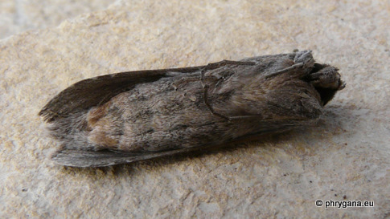

| PHRYGANA | Fauna | Flora |
additions nouveautés |
espèces species |
contact -
info - commentaires phrygana1 (at) gmail.com |
| Particularités crétoises | Galles et mines |
| Cucullia (Cucullia) calendulae Treitschke 1835 |
| 87 | Fauna | NOCTUIDAE | Cuculliinae | Cucullia |
|
Cucullia calendulae Melambes (Agios Giorgos) 06 décembre 2009 |
| Envergure: 38 - 42 mm; couleur de fond gris clair à gris foncé; |
| Chenille vert clair, vert et mauve avant la chrysalidation |
| Espèce univoltine: période de vol en novembre décembre janvier février mars |
| Statut en Crète: indigène |
| Biotopes en Crète: phrygana, olivaies, garrigue, terrains vagues. |
| Distribution: Europe méditerranéenne orientale, Moyen-Orient, Asie mineure, Egypte. |
| Larve oligophage: diverses Asteraceae dont: Calendula sp. , Anthemis sp., de février à mai - juin | ||
|
|
||
| Calendula arvensis | ||
|
Cucullia calendulae Melambes (Agios Giorgos) 06 décembre 2009 |
|
Cucullia calendulae Melambes (Agios Giorgos) 21 décembre 2009 |
|
Cucullia calendulae Melambes (Agios Giorgos) 15 décembre 2009 |
|
Cucullia calendulae Melambes (Agios Giorgos) 24 décembre 2010 |
|

Cucullia calendulae Melambes (Agios Giorgos) 06 mars 2011 |
|
Cucullia calendulae Melambes (Agios Giorgos) 09 janvier 2011 |
 calendulae Treitschke 1835") Cucullia calendulae Melambes (Agios Giorgos) 05 janvier 2012 |
| 06 janvier 2012 |
| © paul fontaine -- © Phrygana.eu 2007 -- 2013 |